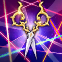
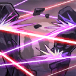
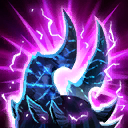

Chi tiết cập nhật 12/11
Eve thức tỉnh, Judas được buff chống khống chế, Area 31 Demon Gate, Ruby Farming Stage 10 và loạt gói kỷ niệm 1.5 năm — bản dịch đầy đủ từ thông báo chính thức trên forum.

Bài dịch từ thông báo chính thức "11/11 (Wed) Update Details" trên forum Seven Knights Re:BIRTH. Tên Hero, tên kỹ năng và tên hiệu ứng giữ nguyên tiếng Anh. Chi tiết kỹ năng có thể thay đổi. Ảnh và video trong thông báo gốc được chụp từ bản thử nghiệm, hiển thị bằng tiếng Hàn, bản cập nhật thực tế áp theo từng ngôn ngữ.
Tóm tắt nhanh:
- Eve ra mắt cùng bản Thức tỉnh
- Judas được buff chống khống chế
- Area 31 [Demon Gate] mở ở cả Normal và Nightmare
- Ruby Farming thêm Stage 10
- Điểm thắng Arena tăng ở mọi hạng
- Voucher 500 Days phải dùng hết trước bảo trì 12/11 — mỗi voucher đổi thành Gold x100,000
Tướng mới & Thức tỉnh
[Legendary] Eve — Tướng mới
Tướng mới [Legendary] Eve sẽ được thêm vào game, thuộc phe Apostles of the Abyss, vai trò Attack.
Trang bị chuyên dụng (Dedicated Equipment) của Eve, 'Eve's Not-Eve Eve', sẽ được thêm vào game.
Bài này chỉ trình bày chi tiết kỹ năng của Eve bản Thức tỉnh, không trình bày chi tiết kỹ năng của Eve bản 6★ thường.
[Legendary] Eve — Tướng Thức tỉnh mới
Tướng Thức tỉnh mới [Legendary] Eve sẽ được thêm vào game.
| Tên | Eve | Bậc | Legendary |
|---|---|---|---|
| Thuộc phe | Apostles of the Abyss | Vai trò | Attack |
Kỹ năng Eve — bản Thức tỉnh
Tấn công thường
Basic AttackGây sát thương bằng 130% Physical Attack, 1 lần. 100% gây 8 Awakening Gauge Reduction: giảm 8 điểm Awakening Gauge của mục tiêu.

Time of Our Lives
Skill 1100% gây 8 Awakening Gauge Steal: đánh cắp 8 điểm Awakening Gauge của mục tiêu.
100% gây Buff Duration Reduction: giảm thời gian duy trì buff đi 2 lượt.
Gây sát thương bằng 92% Physical Attack cộng thêm 9% Max HP của mục tiêu, 2 lần. Sát thương theo HP bị giới hạn ở 150% Attack của người dùng.
Kích hoạt lại tối đa 1 lần với 100% sức mạnh khi hạ gục một địch bằng kỹ năng này.
Nhận Weakness Hit Damage Boost, 2 lượt: tăng sát thương Weakness Hit thêm 26%.
Paradise for Two
Skill 2Gây sát thương Defense-Ignoring bằng 61% Physical Attack, 3 lần. Sát thương tăng tối đa 50%, tỉ lệ với HP hiện tại của mục tiêu.
Hồi sinh đồng minh đã ngã với Immortality khi hạ gục một địch bằng sát thương từ kỹ năng này, 2 lượt. Nhận Effect Resist Boost, 2 lượt: tăng Effect Resistance thêm 37%. Nhận Physical Attack Boost, 2 lượt: tăng Physical Attack thêm 25%.
Nhận Weakness Hit Damage Boost, 2 lượt: tăng sát thương Weakness Hit thêm 26%.

Maker of Living Dolls
PassiveNhận Blessing, luôn kích hoạt: giới hạn sát thương nhận vào từ một đòn đánh ở mức 25% Max HP.
Nhận Barrier bằng 135% Physical Attack, 3 lượt.
Nhận Guts, 1 lần mỗi trận: sống sót với 1 HP khi nhận sát thương chí mạng lần đầu tiên.
Nhận Barrier bằng 135% Physical Attack khi kích hoạt Guts, 3 lượt.
Nhận Crit Rate Boost, luôn kích hoạt: tăng Crit Rate thêm 50%.
Nhận Weakness Hit Chance Boost, luôn kích hoạt: tăng Weakness Hit Chance thêm 50%.
Nhận All Debuff Removal (Crowd Control) khi bị gây Crowd Control, 1 lần mỗi trận: xóa mọi debuff khống chế.
Nhận Crowd Control Immunity khi một debuff bị loại bỏ, 2 lượt: miễn nhiễm với Crowd Control.
Khi Guts được kích hoạt, toàn bộ đồng minh nhận thêm: All Debuff Removal; hồi HP bằng 40% Physical Attack; thời lượng Fixed HP thành 2 lượt. Fixed HP: HP được cố định ở giá trị hiện tại, không bị ảnh hưởng bởi hiệu ứng sát thương hoặc hồi máu.

Dancing in Paradise
Awakened SkillGây sát thương Defense-Ignoring bằng 60% Physical Attack, 3 lần.
Hồi sinh đồng minh đã ngã với Immortality khi hạ gục một địch bằng sát thương từ kỹ năng này, 2 lượt. Nhận Effect Resist Boost, 2 lượt: tăng Effect Resistance thêm 37%. Nhận Physical Attack Boost, 2 lượt: tăng Physical Attack thêm 25%.
Tăng sát thương lên 66% Physical Attack.
Thêm sát thương: sát thương tăng tối đa 100%, tỉ lệ với HP hiện tại của mục tiêu, khi mục tiêu có Physical Vulnerability.
*Chi tiết kỹ năng có thể thay đổi. Phần trên được viết dựa trên kỹ năng Thức tỉnh.*
Eve được thêm vào các nội dung & kho đồ
Tướng [Legendary] Eve sẽ được thêm vào:
| Nội dung và vật phẩm | Tướng |
|---|---|
| Danh sách tướng [Legendary] nhận được làm thưởng sau Giai đoạn 2 của Repeat Battle Stages (Ruby Farming) | Eve |
| Danh sách Fusion tướng 3★–5★ | Eve |
| Random Crafting | Eve |
| Hero Codex | Eve |
| Profile Portrait | Eve |
| Mercure's Lab | Eve |
Eve sẽ được thêm vào các Selector và Ticket:
| Selector/Ticket | Tướng |
|---|---|
| Tower of Trials Hero Ticket | Eve |
| Tower of Trials Hero Ticket II | Eve |
| Legendary Hero Selector | Eve |
| Legendary Hero Ticket II | Eve |
| Rare – Legendary Hero Ticket II | Eve |
| Legendary Hero Selector II | Eve |
| Legendary Hero Ticket III | Eve |
Trang bị chuyên dụng 'Eve's Not-Eve Eve' sẽ được thêm vào: Dedicated Equipment Wish List Summon, Dedicated Equipment Selection Box, Dedicated Equipment Box, Dedicated Equipment Box I và Dedicated Attack Hero Equipment Selection Box.
Cân bằng tướng (Hero Balance Adjustment)
Thay đổi sau điều chỉnh:
- Barrier bằng 160% Physical Attack của bản thân nay có thời lượng 2 lượt (trước đây không ghi thời lượng).
- Mới: nhận All Debuff Removal khi bị gây Crowd Control, 1 lần mỗi trận — xóa mọi debuff khống chế.
- Mới: nhận Crowd Control Immunity khi một debuff bị loại bỏ, 2 lượt — miễn nhiễm với Crowd Control.
Toàn bộ nội tại sau điều chỉnh:

Abyssal Power
PassiveNhận Blessing, luôn kích hoạt: giới hạn sát thương nhận vào từ một đòn đánh ở mức 25% Max HP.
Nhận Barrier bằng 160% Physical Attack, 2 lượt.
Nhận 1 cộng dồn Physical Attack Boost (tăng 10% mỗi cộng dồn, tối đa 15) mỗi khi dùng bất kỳ đòn tấn công nào đủ 2 lần; đầu trận nhận thêm số cộng dồn bằng số đồng minh hệ Universal (không tính bản thân).
Nhận Barrier bằng 110% Physical Attack mỗi khi dùng bất kỳ đòn tấn công nào đủ 2 lần, 2 lượt.
Giảm hồi chiêu kỹ năng đi 17 giây khi một đồng minh gục trong trận.
Nhận All Debuff Removal khi bị dính Crowd Control, 1 lần mỗi trận.
Nhận Crowd Control Immunity khi một debuff được xóa, 2 lượt.
Damage Reduction, luôn kích hoạt: giảm sát thương gây ra đi 13%.
Crit Damage Reduction, luôn kích hoạt: giảm sát thương chí mạng đi 34%.
Mark of Darkness cố định lên 3 địch có Attack cao nhất mỗi vòng.
*Chi tiết kỹ năng có thể thay đổi. Phần trên được viết dựa trên kỹ năng Thức tỉnh.*
Nội dung mới (New Content)
Trang phục mới (New Costume)
Trang phục mới của Aquila, Eve, Sunran, Vanessa, Rachel và Eileene sẽ được thêm vào game.
[Aquila] Herald of Duels (Rare/Uncommon): thêm vào Dressing Room và danh sách thưởng Real Time Arena, biểu tượng trang phục hiển thị ở mục Season Rewards của Real Time Arena. Bản Rare yêu cầu hạng cuối mùa Real Time Arena từ Master 3 trở lên; bản Uncommon yêu cầu từ Platinum 3 đến Diamond 1. Nhận được dựa trên hạng cuối mùa sau bảo trì ngày 10/12 (thứ Năm), chỉ nhận đến trước bảo trì ngày 24/12 (thứ Năm), trước khi mùa mới bắt đầu. Mở từ 12/11 (thứ Năm) sau bảo trì (UTC+0).
[Eve] Shooting Star Bunny (Rare): nhận được khi mua gói điều kiện Shooting Star Bunny Eve Special Pack. Mỗi tài khoản chỉ mua được 1 lần. Gói sẽ được gửi vào hộp thư sau khi mua.
[Sunran] Graceful Maid (Rare): nhận được khi mua gói điều kiện Graceful Maid Sunran Special Pack. Mỗi tài khoản chỉ mua được 1 lần. Gói sẽ được gửi vào hộp thư sau khi mua.
[Rachel] Elegant Maid (Rare): nhận được khi mua gói điều kiện Elegant Maid Rachel Special Pack. Mỗi tài khoản chỉ mua được 1 lần. Gói sẽ được gửi vào hộp thư sau khi mua.
[Vanessa] Gentle Maid (Rare): mua trực tiếp trong Dressing Room.
[Eileene] Boisterous Maid (Rare): nhận được từ sự kiện 1.5th Anniversary Re:BIRTH Cafe Mission Event. Chi tiết sẽ được thông báo riêng.
Area 31 [Demon Gate]
- Thêm Adventure (Normal) Area 31 [Demon Gate].
- Thêm Adventure (Nightmare) Area 31 [Demon Gate].
Ruby Farming Stage 10
- Thêm Ruby Farming Stage 10.
- Stage 10 mở khi hoàn thành Adventure (Nightmare) 31-10.
Cải tiến nội dung (Content Improvement)
Điểm thắng Arena (Arena Victory Points)
Điểm thắng nhận được từ Bronze 3 đến Diamond 1 trên tất cả các hạng Arena đều tăng lên:
| Hạng | Trước | Sau |
|---|---|---|
| Diamond 1–3 | +25 | +30 |
| Platinum 1–3 | +25 | +35 |
| Gold 1–3 | +25 | +40 |
| Silver 1–3 | +25 | +45 |
| Bronze 1–3 | +25 | +50 |
Giảm độ khó Power Up Dungeon & Raid
- Giảm độ khó Stage 2–6 của Power Up Dungeon (Fire, Water, Earth, Light, Darkness và Gold) và Raid (Destroyer Gaze, Ox King và Iron Devourer).
Cải tiến Repeat Battle
- Khi bấm Start Repeat Battle sau khi đặt số lần chạy, entry currency (tiền vào trận) giờ được kiểm tra và trừ theo từng trận, thay vì trừ một lúc cho toàn bộ số lần chạy đã đặt.
- Nếu số entry currency đang có vượt mức tiêu hao ước tính, cửa sổ mua hàng sẽ hiện trong lúc chạy Repeat Battle khi toàn bộ currency đã cạn.
- Trong Arena Repeat Battle, khi hết Arena Token, game sẽ tự động mua theo từng trận bằng Ruby. Nếu không đủ Ruby thì không chỉnh được cài đặt và cửa sổ mua currency sẽ hiện ra.
- Trong nội dung tiêu tốn Key (Adventure, Ruby Farming, Raid...), nếu hết Key trong lúc chạy Repeat Battle, Reserve Key sẽ tự động chuyển thành Key thường. Sau khi chuyển đổi, phải bấm Start để tiếp tục đánh.
Kỷ niệm 1.5 năm: Title, Logo, App Icon & Jukebox
- Màn hình title và app icon cập nhật theo theme kỷ niệm 1.5 năm; logo game đổi sang phiên bản 1.5th Anniversary.
- Main Lobby kỷ niệm (Town, Base, Battle) cập nhật, có cả nền Day và Night.
- Thêm các bản nhạc kỷ niệm 1.5 năm vào Jukebox.
Thay đổi vật phẩm ở một số Exchange & Content Shop
Honor Shop: loại 'Common Hero Ticket', điều chỉnh số lượng và tồn kho một số vật phẩm.
| Vật phẩm | Giá | Tồn kho |
|---|---|---|
| Keys x60 | Honor Points x200 | 7 |
| Dedicated Equipment Wish List Summon Voucher x1 | Honor Points x160 | 10 |
| Pooki Token x1 | Honor Points x200 | 7 |
| Raid Ticket x1 | Honor Points x20 | 50 → 200 |
| Sudden Raid Ticket x1 | Honor Points x100 | 15 → 30 |
| Uncommon Hero Ticket x1 | Honor Points x50 | 20 → 40 |
| Gold x100,000 → Gold x300,000 | Honor Points x100 | 20 |
Total War Shop: loại 'Common Hero Ticket', '4★~6★ Accessory Box' và 'Dedicated Equipment Box I'; điều chỉnh số lượng, tồn kho và tiền mua một số vật phẩm. Các Refining Talisman nay mua bằng Total War Tokens thường thay vì High Grade Total War Tokens.
| Vật phẩm | Giá | Tồn kho |
|---|---|---|
| Key Bundle x1 | Total War Tokens x250 | 10 |
| Hero Summon Voucher x1 | Total War Tokens x250 | 10 |
| Pet Wish List Summon Voucher x1 | Total War Tokens x500 | 20 |
| Dedicated Equipment Wish List Summon Voucher x1 | Total War Tokens x200 | 40 |
| Rare Hero Selector x1 | Total War Tokens x1,000 | 8 |
| Legendary Hero Ticket II x1 | Total War Tokens x16,000 | 1 |
| Skill Enhancement Stone x1 | Total War Tokens x1,250 | 8 |
| Brilliant Skill Enhancement Stone x1 | Total War Tokens x5,000 | 4 |
| Tuning Crystals x50 | Total War Tokens x400 | 20 → 60 |
| Uncommon Refining Talisman x1 | Total War Tokens x7,500 | 10 |
| Rare Refining Talisman x1 | Total War Tokens x15,000 | 5 |
| Legendary Refining Talisman x1 | Total War Tokens x30,000 | 3 |
| Refining Extraction Solution x1 | Total War Tokens x1,000 | 12 |
| Uncommon Hero Ticket x1 | Total War Tokens x80 | 50 |
| Gold x100,000 → Gold x300,000 | Total War Tokens x150 | 30 |
| 4★ Legendary Accessory Box x1 | High Grade Total War Tokens x215 | 3 |
| 5★ Legendary Accessory Box x1 | High Grade Total War Tokens x850 | 2 |
| 6★ Legendary Accessory Box x1 | High Grade Total War Tokens x2,500 | 1 |
Guild Shop: loại 'Quality Egg' và 'Common Hero Ticket', điều chỉnh số lượng và tồn kho một số vật phẩm.
| Vật phẩm | Giá | Tồn kho |
|---|---|---|
| Keys x60 | Guild Token x500 | 7 |
| Hero Summon Voucher x1 | Guild Token x500 | 10 |
| Dedicated Equipment Wish List Summon Voucher x1 | Guild Token x400 | 10 → 20 |
| Sudden Raid Ticket x1 | Guild Token x250 | 15 → 30 |
| Superb Egg x1 | Guild Token x500 | 10 |
| Uncommon Hero Ticket x1 | Guild Token x200 | 20 → 50 |
| Chaos Essence x1 | Guild Token x500 | 10 → 30 |
| Oblivion Essence x1 | Guild Token x2,500 | 3 → 10 |
| 4★ Nezha x1 | Guild Token x16,000 | 2 |
| Gold x100,000 → Gold x300,000 | Guild Token x400 | 20 |
| Key Bundle x1 | Castle Rush Challenge Medals x100 | 5 |
| Seven Knights Ticket x1 | Castle Rush Challenge Medals x4,000 | 1 |
| Uncommon Hero Ticket x1 | Castle Rush Challenge Medals x40 | 20 |
| Star Fragment x1 | Castle Rush Challenge Medals x60 | 20 → 60 |
| Star Crystal x1 | Castle Rush Challenge Medals x1,200 | 2 → 6 |
Danh sách vật phẩm và tồn kho mua bằng 'God of Destruction Fragments' giữ nguyên.
Guild War Shop: loại 'Common Hero Ticket' và '5★ Uncommon Hero Ticket (+5)', điều chỉnh tồn kho một số vật phẩm. Thêm mới 'Legendary Refining Talisman'.
| Vật phẩm | Giá | Tồn kho |
|---|---|---|
| Key Bundle x1 | Pendant of Glory x80 | 10 |
| Hero Summon Voucher x1 | Pendant of Glory x80 | 10 |
| Uncommon Hero Ticket x1 | Pendant of Glory x40 | 60 → 120 |
| Superb Egg x1 | Pendant of Glory x80 | 12 |
| Dedicated Equipment Selection Box x1 | Pendant of Glory x7,000 | 1 |
| Tuning Crystals x50 | Pendant of Glory x120 | 20 → 50 |
| Skill Enhancement Stone x1 | Pendant of Glory x400 | 2 → 8 |
| Star Fragment x1 | Pendant of Glory x50 | 20 → 60 |
| Star Crystal x1 | Pendant of Glory x1,000 | 6 |
| Uncommon Refining Talisman x1 | Pendant of Glory x2,500 | 2 |
| Rare Refining Talisman x1 | Pendant of Glory x5,000 | 1 |
| Legendary Refining Talisman x1 (mới thêm) | Pendant of Glory x10,000 | 1 |
| 4★ Amelia x1 | Pendant of Glory x5,000 | 2 |
| 4★ Diaochan x1 | Pendant of Glory x5,000 | 2 |
Danh sách vật phẩm và tồn kho mua bằng 'High Grade Pendant of Glory' và 'Prime Pendant of Glory' giữ nguyên.
Gói (Packs)
Eve Rapid Power Up
- Gói Eve Rapid Power Up. Xem chi tiết trong game. Mỗi tài khoản chỉ mua được 1 lần. Gói sẽ được gửi vào hộp thư sau khi mua. Rapid Power Up hiển thị khi đạt Transcendence stage 5 của tướng tương ứng.
Gói Area Conquest & Breakthrough mới
- Hai gói Conquered Demon Gate và Demon Gate Nightmare Breakthrough. Xem chi tiết trong game. Mỗi tài khoản chỉ mua được 1 lần. Gói sẽ được gửi vào hộp thư sau khi mua. Hiển thị khi hoàn thành Adventure (Normal) 31-20 và Adventure (Nightmare) 31-20 tương ứng.
Gói kỷ niệm 1.5 năm
- 1.5th Anniversary Grand Festival Ruby Pack I–IV — mua ở [Shop] → [Premium Shop] → [Special], từ 12/11 (thứ Năm) sau bảo trì đến trước bảo trì 26/11 (thứ Năm), UTC+0. Giới hạn mua khác nhau theo sản phẩm, xem trong game. Gói sẽ được gửi vào hộp thư sau khi mua.
- 1.5th Anniversary Abyss Summon Pack I–IV (tái phát hành) — cùng đường mua và thời gian như trên.
- 1.5th Anniversary Fledgling Adventurer's Support Pack I–IV — cùng đường mua và thời gian như trên, mỗi tài khoản chỉ mua được 1 lần.
- 7K Re:START Summon Pack I–IV — cùng đường mua, từ 12/11 sau bảo trì đến khi có thông báo mới, UTC+0. Hiển thị trong 28 ngày cho Adventurer đã hoàn thành Adventure (Normal) Stage 1-2 khi đăng nhập lần đầu sau bảo trì 12/11.
- 1.5th Anniversary 5★ Pet Festa Summon Pack I–IV — cùng đường mua, từ 12/11 sau bảo trì đến khi có thông báo mới, UTC+0. Hiển thị trong 28 ngày cho Adventurer đã hoàn thành Adventure (Normal) Stage 3-10 khi đăng nhập lần đầu sau bảo trì 12/11.
- Vật phẩm 1.5th Anniversary trong Daily Shop — mua ở [Shop] → [Premium Shop] → [Daily Shop], từ 12/11 đến 26/11, UTC+0. Gồm 1.5th Anniversary Daily Super Sale Abyss Pack và 1.5th Anniversary Daily Super Sale Ruby Farming Support Pack. Giới hạn 1 lần mua mỗi ngày, reset mỗi ngày lúc 00:00 UTC+0.
Costume Conditional Packs
- Shooting Star Bunny Eve Special Pack, Elegant Maid Rachel Special Pack và Graceful Maid Sunran Special Pack. Từ 12/11 sau bảo trì đến khi có thông báo mới, UTC+0. Mỗi tài khoản chỉ mua được 1 lần. Trang phục trong các gói này chỉ bán theo điều kiện, có thể được bán lại hoặc tái phát hành dưới dạng sản phẩm tương tự trong tương lai.
New Conditional Packs
- Nhóm 1 — từ 12/11 sau bảo trì đến trước bảo trì 26/11, UTC+0: 1.5th Anniversary Grand Festival Legend Pack, Abyss Chest: Eve's Cheer, Abyss Chest: Eve's Gift, Abyss Chest: Eve's Aid. Mỗi tài khoản chỉ mua được 1 lần.
- Nhóm 2 — từ 12/11 (thứ Năm) sau bảo trì, UTC+0; thông báo gốc không ghi ngày kết thúc cho nhóm này: 7K Re:START Summon Super Sale Pack, Biscuit Super Sale Transcendence Support Pack, Shane Summon Support Super Sale Pack, Espada Ruby Support Super Sale Pack, Customized Pascal Equipment Support Pack, Daisy Super Sale Transcendence Support Pack, Xiao Qiao Super Sale Transcendence Support Pack, Customized Bai Long Equipment Support Pack, Equipment Re:START Support Pack, Windy Super Sale Power Up Pack. Mỗi tài khoản chỉ mua được 1 lần.
Customized Pascal Equipment Support Pack — Set Effect: Avenger
| Trang bị | Loại | Main Stat | Substats |
|---|---|---|---|
| Emperor Pascal's Staff x2 (6★ +15) | Magic Weapon | Crit Damage (%) | All Attack (%), Weakness Hit Chance (%), Crit Damage (%), All Attack |
| Emperor Pascal's Staff x2 (6★ +15) | Armor | All Attack (%) | All Attack (%), Weakness Hit Chance (%), Crit Damage (%), All Attack |
Lưu ý: thông báo gốc ghi cả hai dòng đều là 'Emperor Pascal's Staff', giữ nguyên như bản gốc. Main Stats và Substats của trang bị trong gói là cố định, thứ tự Substats có thể khác nhau theo từng trang bị.
Customized Bai Long Equipment Support Pack — Set Effect: Avenger
| Trang bị | Loại | Main Stat | Substats |
|---|---|---|---|
| Emperor Flash Fist Bai Long's Nunchaku x2 (6★ +15) | Physical Weapon | Crit Damage (%) | All Attack (%), Crit Rate (%), Weakness Hit Chance (%), Crit Damage (%) |
| Emperor Flash Fist Bai Long's Armor x2 (6★ +15) | Armor | All Attack (%) | All Attack (%), Crit Rate (%), Weakness Hit Chance (%), Crit Damage (%) |
7K Pass S2 (tái phát hành) & Relay Packs
- 7K Pass S2 — mua ở [Main Screen] → [Event] → [Battle Pass], từ 12/11 sau bảo trì đến trước bảo trì 10/12 (thứ Năm), UTC+0. Toàn bộ tiến độ hiện tại sẽ reset khi kỳ hiện tại kết thúc, và pass sẽ quay lại với cùng nội dung và điều kiện sau bảo trì.
- Adventure Growth / Rate Up Summon Relay Packs (tái phát hành) — mua ở [Main Screen] → [Event] → [Relay], từ 12/11 đến 26/11, UTC+0. Toàn bộ tiến độ hiện tại sẽ reset khi kỳ hiện tại kết thúc, và các gói sẽ quay lại với cùng nội dung và điều kiện sau bảo trì 12/11.
Sửa lỗi & lưu ý (System Improvements & Fixes)
Sửa lỗi
- Sửa lỗi hiển thị thông báo 'Already equipped.' khi dùng team preset đã lưu trong Shared Team Presets.
- Sửa lỗi một số Adventurer đáp ứng yêu cầu tham gia Total War trong khi đang tham gia Beginner Arena nhưng không được tự động đưa vào Total War.
- Sửa lỗi văn bản hiển thị không chính xác trong tab Reward của mục Help [Sudden Raid].
- Sửa lỗi chữ '(Excluding Self)' hiển thị trong mô tả mục tiêu của hiệu ứng Transcendence 6 thuộc nội tại Sign of Revenge của [Awakened Li], khi ngôn ngữ trong game đặt thành tiếng Nhật.
- Sửa lỗi văn bản trong game hiển thị thành system text khi mở app Seven Knights Re:BIRTH trên thiết bị di động.
Các sự kiện dự kiến kết thúc cùng đợt bảo trì sắp tới
- New Breeze Festa Selection Summon Event; Producer Kim's Gift Event; 0.5th Anniversary 7K Festival Expedition of the Ring & Check-In Event; 500 Days Celebration Check-In Event; 500 Days Pet Wish List Summon Event; Eileene Awakening Support Event.
Lưu ý quan trọng: voucher '500 Days Pet Wish List Summon Voucher' còn lại sẽ bị xóa sau khi sự kiện kết thúc, mỗi voucher chuyển thành Gold x100,000 và gửi vào hộp thư sau bảo trì 12/11 (thứ Năm). Hãy dùng hết mọi voucher trước bảo trì 12/11 (UTC+0). Gold được phát sẽ lưu trong hộp thư 14 ngày.
Cảm ơn các Adventurer đã đồng hành cùng Seven Knights Re:BIRTH.
Cùng khám phá Seven Knights Re:Birth
Theo dõi fanpage để cập nhật thêm các hướng dẫn dành cho cộng đồng.